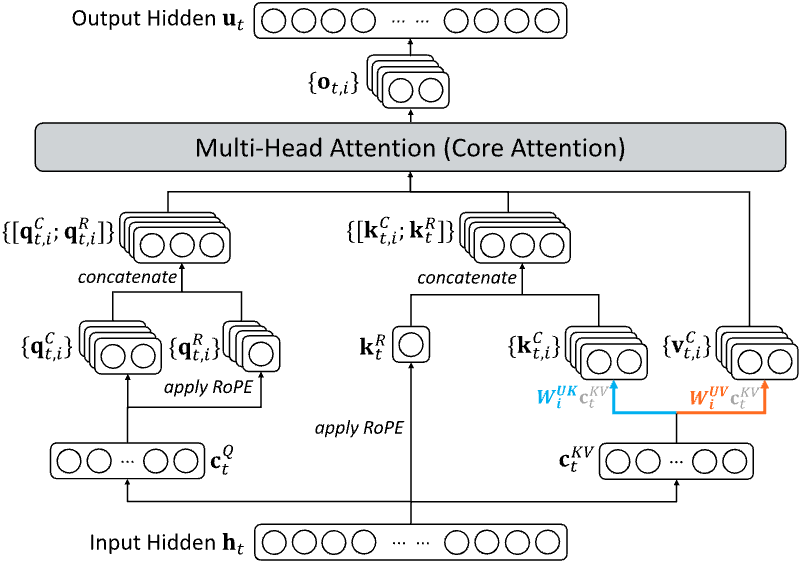
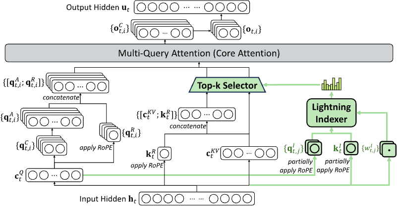
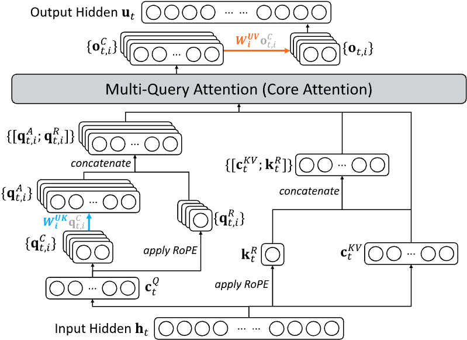

注意力家族的张量并行（TP）拆解
MHA · GQA · MLA · DSA —— 切分策略 × 完整前向 shape 走查
- 摘要与核心结论
- 四种注意力的结构：从「每组独立」到「全局稀疏」
- TP 通用骨架：列并行 / 行并行与 shape 记法
- MHA 的 TP：全头切分（案例 LLaMA-2-7B，TP=4）
- GQA 的 TP：Q 切分 + K/V 分切或复制（案例 LLaMA-3.1-70B）
- MLA 的 TP：latent 复制 + 上行按头切（案例 DeepSeek-V3，TP=4）
- DSA 的 TP：indexer 全复制 + 稀疏注意力（案例 DeepSeek-V3.2-Exp）
- 四模型完整前向 shape 总表
- KV cache 显存账：复制 vs 切分
- 踩坑清单与选择指南
- 结语：注意力 TP 的「切分哲学」
- 附录 A：术语表
- 附录 B：参考来源（含 vLLM 源码实证）
0摘要与核心结论
张量并行（TP）切的是权重矩阵，而注意力层里的权重只有两类角色：一类产出「每个头」的 Q/K/V（按头组织），一类把各头的输出合并回隐藏维（O 投影）。所以对任意注意力结构，TP 只回答两个问题：
- Q 头怎么切？——永远按头列并行（column-parallel）：每卡持有
n_heads/P个 Q 头，前提是n_heads % P == 0； - K/V 怎么获得「可见性」？——这是四种注意力分道扬镳的地方：切分、复制、还是从共享 latent 重算。它决定了 attention 打分能否完全在卡内完成。
O 投影在所有结构里都一样：行并行（row-parallel）+ 每层一次 all-reduce。因此注意力路径的通信量恒定：每层恰好一次 all-reduce（消息 ≈ 2·B·S·M 字节），不存在「哪种注意力通信更多」——差别全在权重怎么放与KV cache 怎么存。
tp ≤ kv_heads 时按头分切、tp > kv_heads 时按组复制（连续 tp/kv_heads 个 rank 共享同一 KV 头，Q 组恰好对齐，attention 仍卡内局部）；
MLA 下行 latent 投影整层复制、上行按头切（KV cache 存 latent，每卡全副本 → KV 显存按 tp 复制）；
DSA 的 indexer（打分 + top-k 选择）全部复制（全局选择必须全可见），稀疏 attention 本体同 MLA。
核心结论（先给答案）
- 切头 TP 的注意力是「零跨卡 softmax」的。只要每个 rank 拥有它那组 Q 头所需的全部 K/V，打分、softmax、加权求和就全在卡内，唯一的跨卡通信是 O 投影后的 all-reduce。MHA/GQA/MLA/DSA 的 TP 都能做到这一点——这正是「切头」优于「切序列」（CP）的地方。
- MHA → GQA → MLA → DSA 的演进本质是「压缩 KV」，而 KV 被压缩得越狠，TP 越切不动它：MHA 的 KV 可按头分（TP 白赚 KV 显存）、GQA 头少了开始复制、MLA 的 latent 是共享向量完全复制（
tp=8时 KV cache 冗余 8×，vLLM 官方文档原文）、DSA 还要额外复制一张 score-key 表。KV 冗余的解药不是更大的 TP，而是 DCP（沿序列 T 维切）。 - MLA/DSA 的「复制」是冗余计算换零通信：每层每 token 的下行 GEMM（如 DSV3 的 7168→2112）在 P 个 rank 上重复算 P 遍，但省掉了任何跨卡同步；上行（按头）与小 GEMM 才是真正并行摊开的。这是它与 GQA「复制权重」在代价形态上的本质区别——GQA 复制的是权重（显存），MLA 复制的是计算（算力）。
- DSA 的 top-k 必须在所有 rank 上一致：indexer 的 Q 投影（
wq_b）与 K 投影（wk_weights_proj）在 vLLM 中都是ReplicatedLinear/disable_tp=True——因为打分需要「每个 query 对全部 token」，而主 attention 的 Q 是按头切的，拿不到全局信息。复制 indexer 后，每个 rank 算出相同的 top-k 下标，再从自己（按头切但含全部 token）的 KV cache 里本地读取，稀疏 attention 依旧卡内局部。 - 工程细节：vLLM 把 MLA 的
o_proj的 all-reduce 延后（reduce_results=False），与下一层输入 RMSNorm 融合（fuse_allreduce_rms）；DSV3 融合 Q/KV 下行投影为单 GEMM（DeepSeekV2FusedQkvAProjLinear，权重 2112×7168）——并行度与 kernel 优化是两件事，但 shape 语义不变。
1四种注意力的结构：从「每组独立」到「全局稀疏」
1.1 结构对比总表
| 结构 | Q 投影 | K / V 投影 | 每个 query 可见的 KV | KV cache 每 token 存什么 | 代表模型 |
|---|---|---|---|---|---|
| MHA | 每头独立 W_Q |
每头独立 W_K / W_V（kv_heads = n_heads） |
自己那组头的全部 KV | 2 × n_heads × hd |
LLaMA-2-7B/13B、GPT-3 |
| GQA | 每头独立 W_Q |
组内共享 W_K / W_V（kv_heads < n_heads，每组 n_heads/kv_heads 个 Q 头） |
自己组那 1 个（或少数几个）KV 头 | 2 × kv_heads × hd |
LLaMA-3/3.1/4、Qwen2/2.5/3、Mistral |
| MLA | 从低秩 c_Q 上采样（W_UQ） |
K/V 共用低秩 c_KV，按头上采样（W_UK / W_UV） |
共享 latent 派生出的全部头 KV | kv_lora_rank + rope_dim（≈ 512+64） |
DeepSeek-V2/V3/V3.2、GLM-5、Kimi |
| DSA | 同 MLA（+ 独立 indexer Q） | 同 MLA（+ 独立 indexer K / score-key 表） | 先全局打分选 top-k（每 query ≤ topk 个 token），只对这些做 attention |
MLA latent + indexer score-key | DeepSeek-V3.2-Exp、GLM-5 |
1.2 一条压缩主线
1.3 本报告案例模型超参（shape 走查基准）
| 模型 | 结构 | 隐藏 M | Q 头 | KV 头 | hd | KV 相关额外项 |
|---|---|---|---|---|---|---|
| LLaMA-2-7B | MHA | 4096 | 32 | 32 | 128 | —（中间维 11008） |
| LLaMA-3.1-70B | GQA | 8192 | 64 | 8 | 128 | —（中间维 28672） |
| DeepSeek-V3 | MLA | 7168 | 128 | 1（latent） | qk 192 = 128 nope + 64 rope；v 128 | q_lora 1536；kv_lora 512 |
| DeepSeek-V3.2-Exp | DSA | 7168 | 128 | 1（latent） | 同上 | indexer：64 score 头 × 128 维；topk=2048 |
2TP 通用骨架：列并行 / 行并行与 shape 记法
2.1 两条铁律
- TP 切权重、不切 token：输入激活 [B, S, M] 在 P 个 rank 上完整复制（每卡都持有全量输入），切的是 GEMM 的权重矩阵。
- 列并行输出分片、行并行输出全量：
列并行（column-parallel）把权重按输出维切：
W ∈ ℝ^{M×N}→ 每卡W_i ∈ ℝ^{M×N/P}，输出 [B,S,N/P]（分片，无需通信）； 行并行（row-parallel）把权重按输入维切：每卡W_i ∈ ℝ^{N/P×M}，各算部分和 [B,S,M]（每卡都是部分和），随后 all-reduce 合并成完整输出。
2.2 QKV 融合权重的两种布局
QKV 通常融合成一个 GEMM。按头切后，权重的列序有两种约定：
| 布局 | 权重列序 | 使用方 |
|---|---|---|
| sequential（顺序） | [全部 Q 头 | 全部 K 头 | 全部 V 头]，每 rank 分到其中一段连续切片 | vLLM（默认）、Megatron（默认） |
| interleaved（交织） | [q0,k0,v0, q1,k1,v1, …]，按「头-组」交织 | 部分 kernel（如 Megatron 的 interleaved 模式、TensorRT-LLM） |
本报告统一用 sequential 布局；shape 语义与布局无关，只是权重切片顺序不同。
2.3 记法约定
全文用 红色 shape 表示全局（单份完整模型）形状，蓝色 shape 表示每卡（TP=P 时单个 rank）形状；B = batch，S = 序列长，P = TP 规模。
3MHA 的 TP：全头切分（案例 LLaMA-2-7B，TP=4）
3.1 切法
MHA 是 TP 的「理想型」：Q/K/V 头数相同，全部按头列并行，每卡 32/4 = 8 个头（Q/K/V 各 8 头）。
| 权重 | 全局形状 | 每卡形状（TP=4） | 并行类型 | 输出 |
|---|---|---|---|---|
W_Q（融合进 QKV） | [4096, 32×128] | [4096, 8×128=1024] | 列并行（按头） | Q: [B,S,1024] 分片 |
W_K / W_V | [4096, 32×128] ×2 | [4096, 1024] ×2 | 列并行（按头） | K/V: [B,S,1024] 分片 |
W_O | [32×128, 4096] | [1024, 4096] | 行并行 + all-reduce | [B,S,4096] 全量 |
3.2 完整前向 shape 走查（注意力路径）
| 阶段 | 全局 shape | 每卡 shape（TP=4） | 说明 |
|---|---|---|---|
| 输入 token | [B, S] | [B, S] | 每卡同一份 token id |
| embedding | x: [B, S, 4096] | [B, S, 4096] | 权重复制，激活全量复制 |
| input RMSNorm | [B, S, 4096] | [B, S, 4096] | 逐 token 归一，全量 |
| QKV GEMM（列并行） | [B, S, 3×4096] | [B, S, 3×1024] | 每卡只算自己的 8 头；无通信 |
| reshape + RoPE | Q/K/V: [B, 32, S, 128] | [B, 8, S, 128] | 按头重排，RoPE 只作用本地头 |
| score = Q·Kᵀ/√128 | [B, 32, S, S] | [B, 8, S, S] | 完全卡内：本卡 Q 头 × 本卡 K 头 |
| softmax（沿 S 维） | [B, 32, S, S] | [B, 8, S, S] | 无跨卡 softmax（切头不需 split-softmax） |
| attn = P·V | [B, 32, S, 128] | [B, 8, S, 128] | 按头加权求和，仍卡内 |
| concat + O GEMM（行并行） | [B, S, 4096] | 部分和 [B, S, 4096] | 每卡输入 [B,S,1024]，各算部分和 |
| all-reduce | [B, S, 4096] | [B, S, 4096] | 合并部分和 → 完整输出（每层唯一一次） |
| residual add | [B, S, 4096] | [B, S, 4096] | 与输入残差相加 |
3.3 MLP 段（稠密层，SwiGLU）
| 阶段 | 全局 shape | 每卡 shape（TP=4） | 说明 |
|---|---|---|---|
| gate/up GEMM（融合列并行） | [B, S, 11008] ×2 | [B, S, 2752] ×2 | 列并行，输出分片无通信 |
| SiLU(gate) ⊙ up | [B, S, 11008] | [B, S, 2752] | 逐元素，卡内 |
| down GEMM（行并行）+ all-reduce | [B, S, 4096] | 部分和 → [B, S, 4096] | 每层第二次 all-reduce |
| residual add | [B, S, 4096] | [B, S, 4096] | — |
因此稠密 Transformer 层每层恰好 2 次 all-reduce（注意力 O 1 次 + MLP down 1 次；gate/up 的列并行输出分片后由 SiLU·Mul 逐元素处理，无需合并）。上份报告按「MLP 两次 + 注意力一次」的口径计为 3 次——差异仅在是否把 gate/up 的列并行输出计入一次合并，shape 语义完全一致。
P 均摊，attention 零跨卡通信，是几何上最优雅的切法。这也是 TP 被发明时（Megatron 2019）针对的形态。
4GQA 的 TP：Q 切分 + K/V 分切或复制（案例 LLaMA-3.1-70B）
4.1 问题：KV 头太少
GQA 里 kv_heads 远小于 n_heads（LLaMA-3.1-70B：64 Q 头 / 8 KV 头）。Q 头照常按 P 切没问题，但 K/V 头只有 8 个——P 超过 8 就切不动了。vLLM 的 QKVParallelLinear 给出了精确规则（vllm/model_executor/layers/linear.py L1074-1081）：
tp_size >= total_num_kv_heads: # 头太少
num_kv_heads = 1 # 每卡 1 个 KV 头
num_kv_head_replicas = tp_size // total_num_kv_heads # 复制因子
else: # 头够分
num_kv_heads = total_num_kv_heads // tp_size # 每卡分到的 KV 头数4.2 情形 A：切分（tp ≤ kv_heads）——TP=8
TP=8、kv_heads=8：每卡 64/8 = 8 个 Q 头 + 1 个 KV 头。Q 头按顺序切分（rank r 持 Q 头 8r..8r+7），而这 8 个 Q 头恰好就是「组 r」——组 r 的 Q 头本来就只关注 KV 头 r，且 rank r 手里正是 KV 头 r。组对齐天然成立，attention 完全卡内。
4.3 情形 B：复制（tp > kv_heads）——TP=16
TP=16、kv_heads=8：每卡 4 个 Q 头 + 1 个 KV 头，复制因子 replicas = 16/8 = 2。关键在 KV 头怎么分配给 rank（vLLM 权重加载：linear.py L1379 shard_rank = tp_rank // num_kv_head_replicas）：
| rank | 0 | 1 | 2 | 3 | 4 | 5 | … | 14 | 15 |
|---|---|---|---|---|---|---|---|---|---|
| KV 头（shard = rank//2） | 0 | 0 | 1 | 1 | 2 | 2 | … | 7 | 7 |
| Q 头（4 个/卡） | 0-3 | 4-7 | 8-11 | 12-15 | 16-19 | 20-23 | … | 56-59 | 60-63 |
| Q 所属组 | 组0 | 组0 | 组1 | 组1 | 组2 | 组2 | … | 组7 | 组7 |
结论：同一组 Q 头恰好横跨「持有同一 KV 头」的连续 replicas 个 rank——每卡的 Q 头只关注本卡的 KV 头，attention 依旧完全卡内，无需任何跨卡 attention 通信。代价是 K/V 权重与 KV cache 被复制了 replicas 份。
shard_rank = tp_rank // replicas）4.4 shape 走查（TP=8 切分情形）
| 阶段 | 全局 shape | 每卡 shape（TP=8） | 说明 |
|---|---|---|---|
| QKV GEMM | [B,S, 8192 + 2×1024] | Q [B,S,1024]；K/V [B,S,128] | Q 按 8 头/卡切；KV 1 头/卡 |
| score | [B, 64, S, S] | [B, 8, S, S] | 8 个 Q 头 × 本卡 1 个 KV 头（组对齐） |
| attn_out | [B,S,8192] | [B,S,1024] | 卡内 |
| O proj + all-reduce | [B,S,8192] | [B,S,8192] | 每层一次 |
| MLP（中间 28672） | [B,S,28672]→[B,S,8192] | [B,S,3584]→ar→[B,S,8192] | gate/up 列并行 + down 行并行 |
-tp 8 时 KV cache 冗余 2×（tp/kv_heads = 8/4）；再加 -dcp 2（decode context parallel，沿序列 T 维切）即可把冗余消掉。GQA 的复制只发生在「KV 头数 < TP」时，且要求 tp % kv_heads == 0。
5MLA 的 TP：latent 复制 + 上行按头切（案例 DeepSeek-V3，TP=4）

{kind=link}
E:\Desktop\deepseek_v3_architecture.jpg 加载）
5.1 MLA 是什么：共享摘要 + 两段投影链（先讲为什么）
普通 GQA 的 K/V 是按头存权重的：每个 KV 头一套投影，8 个头 = 8 组权重。MLA 完全不同——它把 K/V 先压成一个很小的共享向量（latent，DSV3 里只有 512 维），128 个头需要的 K/V 都是从这份共享摘要临时算出来的。打个比方：
- GQA：每个小组发一本自己的教材（K/V 权重），8 本；
- MLA：全班共读一份摘要（latent，512+64 维），128 个同学各自根据摘要现场写自己的笔记（K/V）。
所以 MLA 的投影链天然分成两段（DeepSeek-V2 论文；vLLM 把下行融合成单 GEMM）：
关键性质：「头结构」只存在于上行的 W_UQ / W_UK / W_UV 里，latent 本身是 128 个头共用的一个向量——这是 TP 一切安排的总根源。
论文中的官方公式（DeepSeek-V2，arXiv:2405.04434，§2.1.1）
论文记号：d_c = KV 压缩维（kv_lora_rank，512）；dc' = dc + dkR = 576；dkR = rope 维（64）；dh = 每头维度（128）；nh = 头数（128）。对第 t 个 token ht：
| # | 论文公式 | 含义 |
|---|---|---|
| (1) | ctQ = WDQ ht | Q 侧低秩压缩（q_lora_rank = 1536） |
| (2) | qtC = WUQ ctQ；qtR = RoPE(WQR ctQ)；qt = [qtC; qtR] | Q 上采样：无 rope 部分 + rope 部分拼接 |
| (3) | ctKV = WDKV ht | KV 侧低秩压缩（kv_lora_rank = 512） |
| (4) | ktC = WUK ctKV；ktR = RoPE(WKR ctKV)；kt = [ktC; ktR] | K 上采样（128 维 nope + 64 维 rope） |
| (5) | vtC = WUV ctKV；vt = vtC | V 上采样（128 维） |
| (6) | ot(i) = Σj≤t softmaxj( (qt(i))T kj(i) / √dh ) vj(i)，对每个头 i | 缩放点积注意力（自回归掩码 j ≤ t） |
| (7) | ot = WO [ot(1); ot(2); …; ot(nh)] | 头拼接 + 输出投影（回到 d 维） |
「只有一份」的含义（ktR 的共享性）：ktR = RoPE(WKR ctKV) ∈ ℝ64 是跨头共享的单个向量（MQA 式）——WKR ∈ ℝ64×512 对所有 128 个头只输出一份 64 维 rope 键，拼接进每个头时广播（unsqueeze + expand）。而 ktC / vtC 的「多头」藏在 WUK / WUV 的输出维里（WUK ∈ ℝnh·dh × dc = [16384, 512]，输出是 128 个 dh 维块拼接，reshape 即多头）。正是 K 侧 rope 的共享，才让 KV cache 的 rope 部分只需要 64 维。
对照 5.1 开头的简化链：vLLM 把 (1)+(3) 的压缩与 rope 键融合成单个下行 GEMM（输出 2112 = 1536 + 512 + 64，即 DeepSeekV2FusedQkvAProjLinear）；上采样 (2)(4)(5) 仍是论文的 WUQ/WUK/WUV，按头切分正是对它们做的（按输出维的 nh 个块切）。Q 侧 rope 段并入 WUQ（每个头 192 维中的后 64 维，随 Q 按头切）；K 侧 WKR 是跨头共享的 64 维小矩阵（ktR 只有一份），TP 下整份复制。
5.2 TP 的判断规则（一句话）
5.3 TP=4 时，每张卡持有什么权重
| 权重 | 全局形状 | 每卡形状（TP=4） | 并行类型 | vLLM 实现（实证） |
|---|---|---|---|---|
W_DQ + W_DKV（融合 A 投影） | [7168, 1536+576] | [7168, 2112] 整份复制 | 复制（disable_tp） | DeepSeekV2FusedQkvAProjLinear(disable_tp=True)，权重 2112×7168（deepseek_v2.py L912-927） |
W_UQ（Q 上采样） | [1536, 128×192] | [1536, 32×192=6144] | 列并行（按头） | q_b_proj = ColumnParallelLinear（L289-295） |
W_UK + W_UV（K/V 上采样） | [512, 128×(128+128)] | [512, 32×256=8192] | 列并行（按头） | kv_b_proj = ColumnParallelLinear（L218-224） |
RoPE 部分（k_pe / q 的 rope 段） | k_pe [B,S,64]；q_pe 是 Q 的后 64 维 | 整份复制 / 随 Q 按头切 | 复制 + 随头 | vLLM 把 k_pe 直接并入融合 A 投影输出（576 = 512+64），无独立 W_KR 权重（论文版 W_KR 亦为共享小矩阵） |
W_O | [128×128, 7168] | [4096, 7168] | 行并行 + all-reduce | o_proj = RowParallelLinear（reduce 可延后，L298-305） |
（无 q_lora_rank 的变体，如 DeepSeek-V2-Lite 与部分 V3.2 实现：Q 直接由 q_proj = ColumnParallelLinear(hidden → n_heads×qk_head_dim) 按头切，K/V 下行 kv_a_proj_with_mqa = ReplicatedLinear 复制，语义不变。）
5.4 前向在每张卡上实际发生什么（DSV3 真实数字，TP=4）
逐阶段 shape 汇总：
| 阶段 | 全局 shape | 每卡 shape（TP=4） | 说明 |
|---|---|---|---|
| 输入 | x: [B,S,7168] | [B,S,7168] | 激活复制 |
| 融合 A 投影（复制） | [B,S,2112] | [B,S,2112] 每卡全量 | 冗余计算：4 卡算 4 遍同一 GEMM |
| split + RMSNorm | c_Q [B,S,1536]；kv_c [B,S,512]；k_pe [B,S,64] | 同左（全量） | norm 逐 token，卡内 |
| Q 上采样（列并行） | [B,S,128×192] | [B,S,32×192] | 32 头/卡；RoPE 作用 rope 段 |
| K/V 上采样（列并行） | Knope [B,S,128×128]；V [B,S,128×128] | 各 [B,S,32×128] | 由共享 kv_c 派生，只算本地头 |
| score（卡内） | [B,128,S,S] | [B,32,S,S] | Q 头 × K 头全在本地 |
| attn_out | [B,S,128×128] | [B,S,32×128=4096] | 卡内 |
| O 投影（行并行）+ all-reduce | [B,S,7168] | [B,S,7168] | vLLM 可把 reduce 延后与下一层 RMSNorm 融合（fuse_allreduce_rms） |
5.5 为什么 KV cache 是 ×4（最反直觉的点）
attention 能在卡内算的前提是：每张卡都得能读到全部历史 token 的摘要——它要给自己 32 个头打分，需要所有历史 token 的 K/V，而 K/V 是从摘要现场算的。所以 KV cache 里存的就是摘要本身（每 token 512+64 维），而且每张卡各存一份完整的。对比 MHA/GQA：K/V 按头分开存，TP 后每卡只存 1/P；MLA 的摘要没有「头」可以切，只能整份复制 → 集群总 KV = 单份 × P。三种代价量化如下（DSV3，TP=4，fp8 KV cache）：
| 代价项 | 计算 | 结论 |
|---|---|---|
| 冗余计算（下行 A 投影） | 每层每 token 7168→2112 的 GEMM 算 P 遍 | 2112×7168 ≈ 1510 万 MAC/token/层 × 4 卡重复 —— 与每层主 GEMM 相比占比小，换来零通信 |
| KV cache 冗余 | 每 token 每卡 (512+64)×dtype，P 份 | fp8 下 576 B/token/卡；TP=4 时总 KV = 4× 单副本 —— TP 不摊 MLA 的 KV |
| 注意力通信 | O 投影 all-reduce 一次 | 与 MHA/GQA 完全相同，不因 MLA 增加 |
-dcp 8 即可完全消除复制）。
6DSA 的 TP：indexer 全复制 + 稀疏注意力（案例 DeepSeek-V3.2-Exp）
6.1 结构回顾：两阶段
DeepSeek Sparse Attention（DSA，DeepSeek-V3.2-Exp）在 MLA 之上加了一个「选择器」：
- 阶段 1 —— indexer（打分 + top-k 选择）：用轻量 score 网络对「每个 query × 全部 token」打分，选出每 query 的 top-k 个 token（V3.2-Exp：64 个 score 头 × 128 维，topk=2048）。score-key 表单独缓存（fp8，每 token 128 维 + 缩放）；
- 阶段 2 —— 稀疏注意力：主 MLA 只对选中的 ≤2048 个 token 做 attention（序列不长于 topk 时退化为稠密 attention）。
官方公式（DeepSeek-V3.2-Exp 技术报告，arXiv:2509.17490）
DSA 在 MLA 之上增加 indexer 打分与 top-k 选择，完整公式链（ns = 64 个 score 头、ds = 128、topk k = 2048；形状经 vLLM 博客与 deepseek_v2.py Indexer 实现实证）：
| # | 公式 | 含义 |
|---|---|---|
| (1) | qtscore = WscoreQ ctQ ∈ ℝns×ds | score 查询（64 头 × 128 维；vLLM wq_b，复制） |
| (2) | kjscore = WscoreK hj ∈ ℝds | score 键（MQA 式，每 token 一个共享键；wk_weights_proj + k_norm） |
| (3) | Lt,j(h) = (qt(h))T kjscore / √ds | 逐 score 头 logits → [ns, n] |
| (4) | st,j = Σh wt,h · Lt,j(h) | 头加权合并（wt ∈ ℝns 学习权重；vLLM 博客：logits (n,h) × 头权重 (h,) → (n,)） |
| (5) | It = topkk(st,·)，k = 2048 | 全局 top-k 选择（因果：j ≤ t） |
| (6) | ot = Σj∈It softmaxj( qtT kj / √dqk ) vj | 稀疏注意力（只对选中 token；S ≤ topk 时退化稠密） |
三种计算形态：MHA / MLA / MQA —— 吸收（absorb）与不吸收的实现
「吸收」是 MLA kernel 层的术语（FlashMLA / DeepSeek kernel / vLLM 的 kimi_k3 MLA 实现注释原文 absorbs kv_b_proj into W_UK_T / W_UV、BMM1: absorb q_nope into latent space），指把 KV 上采样矩阵折叠进打分/输出侧，让 K/V 永不物化。下面三张图从不同视角画同一个 DeepSeek-V3.2 注意力架构（来源：CalvinXKY/InfraTech · models/deepseek_v3_2）：



吸收形态省掉每 token 每层的 512→16384 上采样 GEMM（≈16.8M MACs）与中间 K/V 张量的显存/带宽，decode 每 token 只读 576 维 latent——FlashMLA 稀疏解码 kernel 与 indexer 打分（天然 MQA 共享键）都走这条路径。
6.2 切法：indexer 全复制，主 attention 同 MLA
| 模块 | vLLM 实现（实证） | TP 语义 |
|---|---|---|
indexer Q 投影 wq_b | ReplicatedLinear（deepseek_v2.py L669-675，注释原文 "no tensor parallel, just replicated"） | 复制 |
indexer K 投影 wk_weights_proj | MergedColumnParallelLinear(disable_tp=True)（L678-685） | 复制 |
score-key 缓存 k_cache | DeepseekV32IndexerCache（每 token 一个向量） | 复制（每 rank 全量） |
| 主 MLA（Q/K/V/O） | 同 §5：fused_qkv_a_proj 复制 + q_b_proj/kv_b_proj 列并行 + o_proj 行并行 | 同 MLA |
| top-k 下标 | topk_indices_buffer（所有层共享） | 各 rank 相同（因为输入与网络都复制） |
6.3 为什么 indexer 必须复制（这是 DSA 与前面三种的本质区别）
- top-k 是全局运算：每个 query 要跟全部历史 token 打分才能选出全局 top-k。若 indexer 的 Q 按头切（像主 attention 那样），每个 rank 只能看到「自己的头 × 全部 token」——分数矩阵的「头维」被切分后，softmax/top-k 沿序列维的全局性不受影响，但 K 的投影若按头切则每 rank 只有部分 score 头……而 vLLM 干脆让 Q 和 K 都复制：每个 rank 独立算出完全相同的 top-k 下标，无需跨卡同步；
- 复制是便宜的：score 维度只有 128（+64 rope），远小于主 attention 的 qk 维度 192×128 头；且 indexer 的 K 表在推理时是「写一次、全 rank 复用」的缓存；
- 稀疏 attention 依旧卡内局部：主 MLA 的 KV cache 每 rank 本来就含全部 token（latent 全副本，只是按头切了上采样），拿到全局一致的 top-k 下标后，各 rank 直接从本地 cache 读选中的块——跨卡通信仍是 O 投影那一次 all-reduce。
6.4 shape 走查（TP=4，prefill：S 个新 token，上下文 S_ctx）
| 阶段 | 全局 shape | 每卡 shape（TP=4） | 说明 |
|---|---|---|---|
| indexer Q | q_score: [B,S,64×128] | [B,S,64×128] 全量 | 复制 |
| indexer K（score-key） | k_score: [S_ctx,128] | [S_ctx,128] 全量 | 复制，写入 k_cache |
| 打分 + top-k | scores [B,64,S,S_ctx] → topk [B,S,2048] | 同左（完全相同） | 各 rank 独立算、结果一致 |
| 主 MLA Q | [B,S,128×192] | [B,S,32×192] | 按头切（同 §5） |
| 稀疏 attention | scores [B,128,S,≤2048] | [B,32,S,≤2048] | 只对选中 token；序列 ≤ topk 时退化稠密 |
| attn_out → O | [B,S,7168] | [B,S,32×128] → ar → [B,S,7168] | 每层一次 all-reduce |
7四模型完整前向 shape 总表
把四条走查并成一张表（prefill 阶段；红=全局 / 蓝=每卡，P=TP）。
| 阶段 | MHA · LLaMA-2-7B（TP=4） | GQA · LLaMA-3.1-70B（TP=8） | MLA · DeepSeek-V3（TP=4） | DSA · DeepSeek-V3.2-Exp（TP=4） |
|---|---|---|---|---|
| 输入 | [B,S] | [B,S] | [B,S] | [B,S] |
| embed / norm | [B,S,4096] | [B,S,8192] | [B,S,7168] | [B,S,7168] |
| Q 投影 | [B,S,4096] → [B,S,1024] | [B,S,8192] → [B,S,1024] | [B,S,24576] → [B,S,6144] | [B,S,24576] → [B,S,6144] |
| K/V 投影 | [B,S,4096]×2 → [B,S,1024]×2 | [B,S,1024]×2 → [B,S,128]×2 | latent [B,S,576] → [B,S,576]（复制）；K/V 上行 [B,S,32×128] | latent [B,S,576]（复制）；+ score-key [S_ctx,128]（复制） |
| score | [B,32,S,S] → [B,8,S,S] | [B,64,S,S] → [B,8,S,S] | [B,128,S,S] → [B,32,S,S] | [B,128,S,≤2048] → [B,32,S,≤2048] |
| attn_out | [B,S,4096] → [B,S,1024] | [B,S,8192] → [B,S,1024] | [B,S,16384] → [B,S,4096] | 同左 |
| O 投影（行并行 + all-reduce） | [B,S,4096] | [B,S,8192] | [B,S,7168] | [B,S,7168] |
| MLP / MoE 段 | gate/up [B,S,11008] → [B,S,2752]；down → ar → [B,S,4096] | [B,S,28672] → [B,S,3584]；down → ar → [B,S,8192] | MoE：gate [B,S,256]；专家 up/gate [B,S,2048]、down [2048,7168]；EP 时按专家切（见并行度报告 §5） | 同左 |
| 最终 norm + lm_head | [B,S,4096] → [B,S,V] | [B,S,8192] → [B,S,V] | [B,S,7168] → [B,S,V] | [B,S,7168] → [B,S,V] |
7.1 通信与冗余清单（每层）
| 结构 | all-reduce 次数（注意力路径） | 冗余权重 | 冗余计算 | KV cache 冗余 |
|---|---|---|---|---|
| MHA | 1（O 投影） | 无 | 无 | 无（按头切） |
| GQA（切分） | 1 | 无 | 无 | 无（按头切） |
| GQA（复制，tp>kv_heads） | 1 | K/V 权重 ×replicas | 无 | ×replicas = ×(tp/kv_heads) |
| MLA | 1 | 下行 A 投影（W_DQ/W_DKV）整份 | 下行 GEMM ×P（每 token 每层重复算） | ×tp（latent 全副本） |
| DSA | 1 | indexer 全部（wq_b / wk_weights_proj / k_cache） | 下行 GEMM ×P + indexer 打分 ×P | ×tp（latent）+ ×tp（score-key） |
8KV cache 显存账：复制 vs 切分
设每 token 单份 KV 显存为 C₀，TP=P 时每卡每 token 的 KV 显存：
| 结构 | C₀（每 token 单份） | 每卡每 token（TP=P） | 集群总 KV | 结论 |
|---|---|---|---|---|
| MHA | 2·n_heads·hd·d | C₀ / P | C₀ | TP 按头摊 KV ✓ |
| GQA（切分） | 2·kv_heads·hd·d | C₀ / P | C₀ | TP 按头摊 KV ✓ |
| GQA（复制） | 2·kv_heads·hd·d | C₀ / kv_heads | C₀ · (P/kv_heads) | 超过 kv_heads 后 TP 开始复制 ✗ |
| MLA | (kv_lora + rope)·d | C₀（每卡全量） | C₀ · P | TP 完全不摊 KV，还 ×P ✗✗ |
| DSA | (kv_lora + rope)·d + score_key·d | C₀（全量）×2 份表 | C₀ · P | 同 MLA，另加 score-key 表 ✗✗ |
d = 每元素字节（fp16=2，fp8=1）；n_heads/kv_heads 为全局头数。示例（fp8，DSV3：kv_lora=512、rope=64）：MLA 单份 576 B/token；TP=4 集群总 2304 B/token，TP=8 时 4608 B/token。
--decode-context-parallel-size 沿序列 T 维把 KV 切开（交织分块），与 TP 的 H 维切分正交。对 MLA：-tp 8 -dcp 8 把 8× 冗余消到 0；对 GQA 复制（Qwen3-235B，kv=4，tp=8）：-dcp 2 消掉 2× 冗余。原则：先用 TP 摊权重与算力，再用 DCP 消 KV 冗余。
9踩坑清单与选择指南
9.1 决策要点（按注意力结构）
TP 是默认答案：头够多（MHA 全切、GQA 在 tp ≤ kv_heads 时全切），权重、KV、算力一起摊。GQA 注意 tp % kv_heads == 0 约束；超过 kv_heads 后 KV 开始复制，用 DCP 补。
TP 只能摊「上行按头」的权重与算力；latent 下行与 KV cache 是复制。别指望 TP 省 KV 显存——单机 8 卡就是 8× KV 冗余，配 -dcp。MoE 大模型更常见的组合是 TP=1 + EP（见并行度报告 §7）。
TP 语义与 MLA 相同，额外注意 indexer 复制计算的成本随层数增长；长序列 + 大 topk 时 indexer 的 GEMM 不可忽略。IndexCache（跨层复用 top-k）可砍掉大部分重复打分。稀疏化省的是 attention 算力，省不了 latent 的 KV 复制——KV 冗余仍靠 DCP。
FP4 权重 + TP 在 NVIDIA CUDA 上被禁（DeepSeek-V4，见并行度报告 §2.3）；MLA 的 fp8 KV cache 有专用布局（fp8_ds_mla）。MLA 的 o_proj all-reduce 常与下一层 RMSNorm 融合，评估通信开销时别把「未归约的局部输出」误当成已完成。
9.2 踩坑清单
| 坑 | 表现 | 对策 |
|---|---|---|
tp 不整除 n_heads | 启动即断言失败（vLLM assert num_heads % tp_size == 0） | 先查模型头数再定 TP（DSV3 128 头 → 只支持 1/2/4/8/16/32/64/128） |
GQA 的 tp > kv_heads 且 tp % kv_heads ≠ 0 | 断言失败（如 kv=3 时 tp=8 不可用） | 选 3/6/12… 或换结构（复制要求整除） |
| MLA 指望 TP 摊 KV cache | KV 显存不降反升（×tp） | 用 DCP（-dcp）沿序列切；或 EP/DP 布局 |
| DSA 忘了 indexer 的复制成本 | TP 越大，每层重复打分越浪费（尤其大 batch） | 开 IndexCache（index_topk_freq）；batch 大时评估 indexer GEMM 占比 |
| MLA 的 O 投影未归约就当完成 | 错误统计通信 / 数值错误（部分和） | 确认 all-reduce 与下个算子（RMSNorm）的融合方式 |
| GQA 复制模式的组对齐想当然 | 手写切分时 Q 组与 KV 副本组错位 → 结果错误 | 按 vLLM 规则：kv_shard = rank // replicas，Q 顺序切 |
| 把 CP（切序列）与 TP（切头）混用而不查整除 | DCP 要求 tp % dcp == 0 等约束 | 先 TP 后 DCP，逐级验证（见 §8 与并行度报告 §6.3） |
10结语：注意力 TP 的「切分哲学」
- TP 对注意力是「切头」而不是「切序列」：只要每个 rank 的 Q 头所依赖的 K/V 全部在本地，打分/softmax/加权就零通信——这是所有四种结构的共同地基。代价只在权重与 KV 的「放法」不同。
- KV 越压缩，TP 越无能为力：MHA 时代 TP 白赚 KV 显存；GQA 头少开始复制；MLA 的 latent 完全复制；DSA 还要复制选择器。演进方向上，TP 在注意力里的角色从「全能切分」退化为「只切 Q 头与上行」——这解释了为什么 MoE + MLA 时代官方配方普遍 TP=1 + EP（并行度报告 §7）。
- 冗余的两种形态要分清：GQA 复制的是权重（显存账），MLA/DSA 复制的是计算与 KV（算力账 + 显存账）。「复制权重」在推理侧通常是划算的（权重只读、一次加载）；「复制计算」要按 batch 与层数算账；「复制 KV」则几乎总是坏账——用 DCP 消。
- shape 走查的价值：把每个阶段的全局/每卡形状写下来，就能在任何引擎上核对并行语义是否正确（vLLM 的
base_model_tp_plan、Megatron-Bridge 的切分脚本都只是这套 shape 规则的自动化）。下一份报告可以沿这条线继续：EP 视角的 MoE 层 shape 走查、或 CP/DCP 的 KV 分块粒度。
A附录 A：术语表
| 术语 | 含义 |
|---|---|
| column-parallel / row-parallel | 列并行：权重按输出维切（输出分片）；行并行：按输入维切（输出为部分和，需 all-reduce） |
| sequential / interleaved QKV 布局 | 融合 QKV 权重的列序：[Q|K|V] 顺序排列 vs [q0,k0,v0,…] 按头交织 |
| num_kv_head_replicas | GQA 中 KV 头复制因子 = tp / kv_heads；连续若干 rank 共享同一 KV 头 |
| kv_lora_rank / q_lora_rank | MLA 的 KV/Q 低秩压缩维度（DSV3：512 / 1536） |
| qk_nope_head_dim / qk_rope_head_dim / v_head_dim | MLA 每头维度：无 RoPE 的 qk 部分（128）、RoPE 部分（64）、v（128） |
| indexer / score-key / topk | DSA 选择器：打分网络 / 缓存的打分键表 / 每 query 选中的 token 数（2048） |
| IndexCache | 跨层复用 top-k 下标的优化（index_topk_freq / index_topk_pattern，arXiv:2603.12201） |
| DCP / PCP | decode/prefill context parallel：沿序列 T 维切 KV（消 TP 复制） |
| fuse_allreduce_rms | vLLM 编译 pass：把 O 投影的 all-reduce 与下一层 RMSNorm 融合 |
B附录 B：参考来源（含 vLLM 源码实证）
- vLLM 源码（本地 checkout 逐行核对）：
vllm/model_executor/layers/linear.py L1074-1081（QKVParallelLinear 的 KV 头分切/复制规则）、L1379（
shard_rank = tp_rank // num_kv_head_replicas）； vllm/model_executor/models/deepseek_v2.py L912-927（DeepSeekV2FusedQkvAProjLinear disable_tp=True）、L645-717（Indexer：wq_b ReplicatedLinear、wk_weights_proj disable_tp、k_cache）、L1000-1066（MLA 各投影的并行类型）； vllm/models/deepseek_v32/attention.py L176-320（V3.2 的 TP 装配：fused_qkv_a_proj / q_b_proj / kv_b_proj / o_proj / indexer）。 - vLLM 官方文档（本地 checkout）： docs/serving/context_parallel_deployment.md（"DeepSeek-R1 … -tp 8 causes 8x KV cache duplication"、Qwen3-235B 4 KV 头 2× 复制案例）； docs/features/index_cache.md（DSA top-k 跨层复用，index_topk_freq / pattern）； docs/design/attention_backends.md（MLA 专用后端、稀疏 MLA）； docs/design/nixl_connector_compatibility.md（"MLA KV cache is replicated across TP workers"）； docs/design/fusions.md（fuse_allreduce_rms / MLA 量化融合）。
- DeepSeek-V2 论文（arXiv:2405.04434）：MLA 的 W_DQ/W_DKV/W_UQ/W_UK/W_UV 定义与维度。
- DeepSeek-V3 技术报告（arXiv:2412.19437）：MLA 配置（q_lora 1536 / kv_lora 512 / qk_nope 128 / qk_rope 64 / v 128）。
- DeepSeek-V3.2-Exp 技术报告（arXiv:2509.17490）与 vLLM recipes（docs.vllm.ai DeepSeek-V3.2 使用指南）：DSA 的 indexer 超参（64 score 头 × 128 维、topk=2048）、FP8 稀疏 MLA 后端。
- IndexCache 论文（arXiv:2603.12201）：DSA 跨层 top-k 复用。
- Megatron-LM（Narayanan et al. 2021，arXiv:1909.08053）：列/行并行、按头切分与 sequential/interleaved 布局；Megatron-Core 对 GQA 的 kv 头分切/复制语义与 vLLM 一致。
- TensorRT-LLM PR #15513（DSA indexer top-k 跨层复用）、PR #11990（GLM-5 支持与 DSA MTP）；NVIDIA 博客 Optimizing DeepSeek-V3.2 on Blackwell。
- 本工作区配套：02_并行研究·各种并行度研究（TP/PP/DP/EP/SP/CP 全景）；01_vllm 执行流水拆解报告（MTP/DSA 算子级细节）；SP vs CP 详解（SP/CP 两线演化的完整对比）。